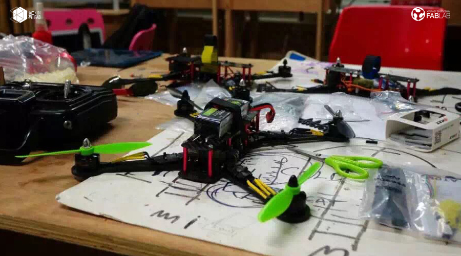
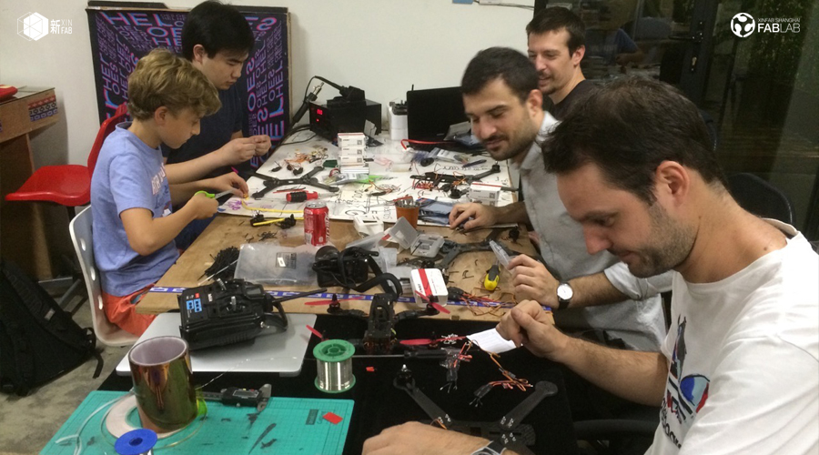
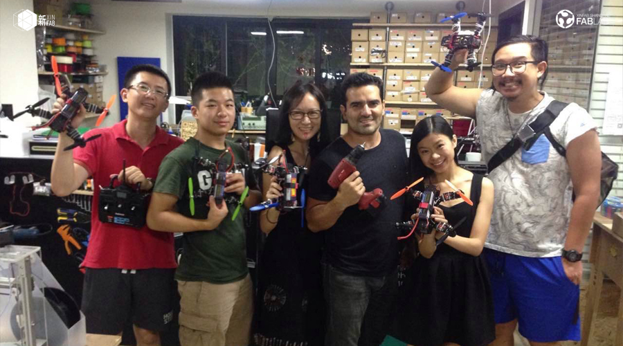

WORKSHOP
DIY DRONE WITH LUCIO (XINFAB'S FOUNDER) – SUNDAY, 26 NOVEMBER 2017 (12pm to 9pm)

When:Sunday, November 26 from 12pm to 9 pm
Where: Xinfab - Kangding East Rd, Lane 45, Building no.5, Room 102, Jing'an District
Price: 2200 RMB (+350 RMB if you want to build with a partner)
Join Xinfab's founder Lucio to learn how to make your own drone (quadcopter) from scratch.
Aside from going home with your very own drone, you will learn some key maker skills such as soldering electronic parts, understanding how everything connects together, some design thinking and more.
Building a machine is the best way to understand how machines work by far!
***We are not flight instructors! Learning how to fly your drone and abide by local laws is your responsibility. We'll test the quadcopter indoors only to verify your assembly and parts (maybe we can have a go at our terrace if everyone behaves well ;) )
What's a quadcopter?
It's a multi-rotor air vehicle that is lifted and propelled by 4 rotors. Its amazing maneuverability and resilence to challenging flight environments has earned it a lot of respect in aviation.
** Because we have to order drone parts ahead of time, you MUST pre-pay or you'll lose your spot! **
Things you should bring:
// Your lunch! (We sell drinks and we have water but food is on you)
// Your passion, curiosity, and questions
Price includes:
_1 carbon fiber Quadcopter frame with 2 pairs of propellers
_1 CC3D controlling board
_4 motors
_Wires
_4 motor controller board
_1 battery
_1 battery charger
_1 remote controller
_1 receiver



///////////////////////////////////
HOW TO SIGN UP
SIGN UP DEADLINE: THURSDAY, NOVEMBER 23 AT NOON
** Because we have to order drone parts ahead of time, you MUST pre-pay or you'll lose your spot! **
// ALIPAY (2200 RMB)
Transfer the workshop fee to pay@xinfab.com (please indicate your phone number on the payment details so we can contact you!)
// CASH (2200 RMB)
Come by our lab during our opening hours to book your spot.
// WECHAT (2215 - Wechat charges a fee)
Enter our shop from your phone via this link and proceed to payment with Wechat Wallet
Questions? Send us an email to info@xinfab.com.
///////////////////////////////////
ABOUT THE TEACHER

Lucio Pentagna is the founder of Xinfab. An allround maker and 3d printer specialist, Lucio is an entrepreneur, lawyer, CEO, sailor and farmer. He started opening up machines and building new ones from a very early age. Aside from making drones, 3D printers, CNCs and all sorts of electronics, he also set up the entire computer network of one of the companies he used to run when he was only 18 (and back when nobody knew how to do that) and most recently built his own house (!!) in Portugal. Lucio moved from Brazil to Shanghai five years ago and found the fablab, though he now lives in Portugal with his wife and three kids. From time to time he comes back to Shanghai to pay Xinfab a visit and build cool things for us here.